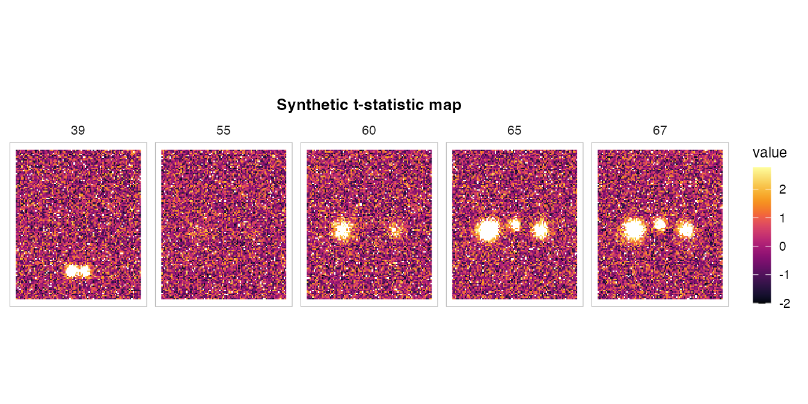
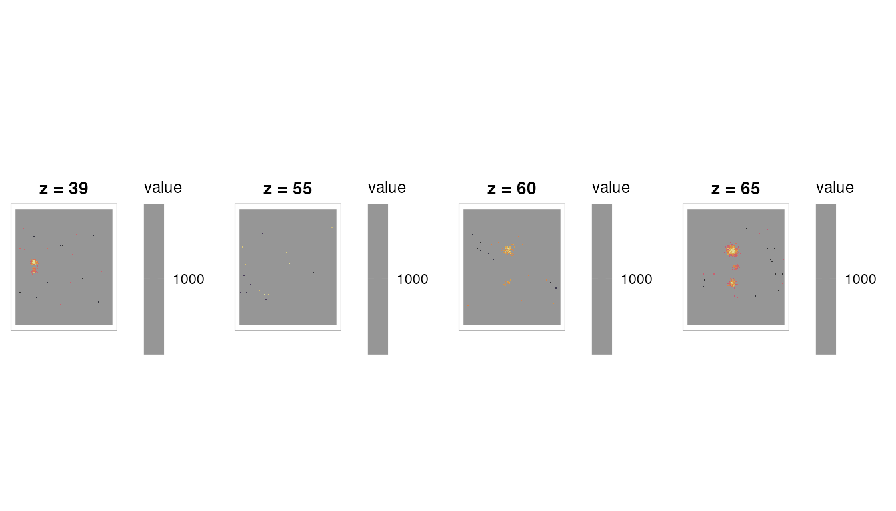

Overview
cluster_table() is fmrireport’s standalone function for
building publication-quality activation tables from any statistical
brain volume. It follows COBIDAS reporting guidelines: hierarchical
cluster/sub-peak structure, world coordinates, p-values, and optional
anatomical labeling.
This vignette walks through creating realistic synthetic activations, detecting clusters, formatting tables, and adding atlas labels.
Creating synthetic activation maps
Real fMRI analyses produce NeuroVol objects from
fmrireg or similar packages. For demonstration, we’ll build
a synthetic t-statistic volume with Gaussian-shaped activation blobs
placed at known locations.
library(fmrireport)
library(neuroim2)
#> Loading required package: Matrix
#>
#> Attaching package: 'neuroim2'
#> The following object is masked from 'package:base':
#>
#> scale
# Define a brain-like volume in MNI-ish space
# 2mm isotropic, 91x109x91 grid, origin at (-90, -126, -72)
sp <- NeuroSpace(c(91, 109, 91),
spacing = c(2, 2, 2),
origin = c(-90, -126, -72))
# Start with Gaussian noise (simulating a t-stat map under the null)
set.seed(2024)
arr <- array(rnorm(prod(dim(sp))), dim(sp))Now add Gaussian-shaped activation blobs. We’ll place them at grid coordinates and use a smooth falloff to simulate realistic spatial extent:
# Helper: add a 3D Gaussian blob centered at grid coordinate (cx, cy, cz)
add_gaussian_blob <- function(arr, cx, cy, cz, peak_value, sigma = 4) {
dims <- dim(arr)
# Work in a local window for efficiency
radius <- ceiling(3 * sigma)
x_range <- max(1, cx - radius):min(dims[1], cx + radius)
y_range <- max(1, cy - radius):min(dims[2], cy + radius)
z_range <- max(1, cz - radius):min(dims[3], cz + radius)
for (xi in x_range) {
for (yi in y_range) {
for (zi in z_range) {
d2 <- (xi - cx)^2 + (yi - cy)^2 + (zi - cz)^2
arr[xi, yi, zi] <- arr[xi, yi, zi] +
peak_value * exp(-d2 / (2 * sigma^2))
}
}
}
arr
}
# Place blobs at grid coordinates that map to known cortical MNI regions.
# With origin=(-90,-126,-72) and spacing=2mm:
# grid (27,51,65) -> MNI (-38,-26,56) = Left SomMot
# grid (65,51,65) -> MNI ( 38,-26,56) = Right SomMot
# grid (46,55,67) -> MNI ( 0,-18,62) = Medial motor
# grid (41,21,39) -> MNI (-10,-86, 4) = Left V1
# grid (51,21,39) -> MNI ( 10,-86, 4) = Right V1
# Blob 1: Left somatomotor cortex (large, strong activation)
arr <- add_gaussian_blob(arr, cx = 27, cy = 51, cz = 65, peak_value = 8, sigma = 5)
# Blob 2: Right somatomotor cortex (moderate)
arr <- add_gaussian_blob(arr, cx = 65, cy = 51, cz = 65, peak_value = 6, sigma = 4)
# Blob 3: Medial motor / SMA (moderate)
arr <- add_gaussian_blob(arr, cx = 46, cy = 55, cz = 67, peak_value = 5.5, sigma = 3)
# Blob 4: Left primary visual cortex (small, strong)
arr <- add_gaussian_blob(arr, cx = 41, cy = 21, cz = 39, peak_value = 7, sigma = 3)
# Blob 5: Right primary visual cortex (small, moderate)
arr <- add_gaussian_blob(arr, cx = 51, cy = 21, cz = 39, peak_value = 5, sigma = 3)
vol <- NeuroVol(arr, sp)Let’s visualize the synthetic activation map:
# Show axial slices at the levels where we placed blobs
slices <- c(39, 55, 60, 65, 67)
plot_montage(vol, zlevels = slices, along = 3L,
cmap = "inferno", ncol = 5L,
title = "Synthetic t-statistic map")
Basic cluster detection
Detect clusters at t > 3.0 with default settings:
ct <- cluster_table(vol,
threshold = 3.0,
stat_type = "t",
df = 100,
min_cluster_size = 20)
print(ct)
#> cluster_table: 4 cluster(s) | threshold = 3.00 (t) | space = Unknown
#>
#> Cluster 1 (k = 1623, 12984 mm3)
#> Peak: x = -38.0 y = -26.0 z = 52.0 stat = 9.167 p = 6.635e-15
#> sub-peak 2: x = -38.0 y = -26.0 z = 54.0 stat = 9.063 p = 1.117e-14
#> sub-peak 3: x = -38.0 y = -30.0 z = 54.0 stat = 9.005 p = 1.495e-14
#>
#> Cluster 2 (k = 530, 4240 mm3)
#> Peak: x = 36.0 y = -28.0 z = 56.0 stat = 8.086 p = 1.485e-12
#> sub-peak 2: x = 42.0 y = -24.0 z = 60.0 stat = 7.330 p = 6.078e-11
#> sub-peak 3: x = 38.0 y = -28.0 z = 58.0 stat = 7.248 p = 9.031e-11
#>
#> Cluster 3 (k = 483, 3864 mm3)
#> Peak: x = -10.0 y = -88.0 z = 6.0 stat = 8.573 p = 1.307e-13
#> sub-peak 2: x = -10.0 y = -86.0 z = 4.0 stat = 8.439 p = 2.566e-13
#> sub-peak 3: x = -12.0 y = -88.0 z = 2.0 stat = 8.410 p = 2.965e-13
#>
#> Cluster 4 (k = 187, 1496 mm3)
#> Peak: x = -2.0 y = -18.0 z = 60.0 stat = 6.481 p = 3.481e-09
#> sub-peak 2: x = 2.0 y = -18.0 z = 62.0 stat = 6.439 p = 4.227e-09
#> sub-peak 3: x = -2.0 y = -16.0 z = 60.0 stat = 6.336 p = 6.804e-09The output shows:
- Cluster ID and size (voxels and mm^3)
- Peak coordinates in world space (mm)
- Peak statistic and p-value
- Sub-peaks (local maxima) indented below each cluster
Controlling sub-peak detection
The local_maxima_dist parameter sets the minimum
distance (mm) between reported sub-peaks. A larger value gives fewer,
more distinct peaks:
# Tight distance: many sub-peaks
ct_tight <- cluster_table(vol, threshold = 3.0, stat_type = "t", df = 100,
local_maxima_dist = 8, max_peaks = 5)
cat("Sub-peaks with 8mm distance:\n")
#> Sub-peaks with 8mm distance:
nrow(ct_tight$peaks)
#> [1] 20
# Wide distance: fewer sub-peaks
ct_wide <- cluster_table(vol, threshold = 3.0, stat_type = "t", df = 100,
local_maxima_dist = 25, max_peaks = 5)
cat("Sub-peaks with 25mm distance:\n")
#> Sub-peaks with 25mm distance:
nrow(ct_wide$peaks)
#> [1] 20Sorting options
By default, clusters are sorted by size (descending). You can sort by peak statistic instead:
ct_by_stat <- cluster_table(vol, threshold = 3.0, stat_type = "t", df = 100,
sort_by = "peak_stat")
# First cluster has the highest absolute peak stat
ct_by_stat$clusters[, c("cluster_id", "k", "peak_stat")]
#> cluster_id k peak_stat
#> 1 1 1623 9.166727
#> 2 3 483 8.573392
#> 3 2 530 8.085848
#> 4 4 187 6.480548P-value computation
cluster_table() computes voxel-level p-values from the
peak statistic and degrees of freedom. Different statistic types are
supported:
# t-statistic
ct_t <- cluster_table(vol, threshold = 3.0, stat_type = "t", df = 100)
head(ct_t$clusters[, c("peak_stat", "peak_p")])
#> peak_stat peak_p
#> 1 9.166727 6.635204e-15
#> 2 8.085848 1.485288e-12
#> 3 8.573392 1.307328e-13
#> 4 6.480548 3.481219e-09
# z-statistic (provide df to enable p-value computation)
ct_z <- cluster_table(vol, threshold = 3.0, stat_type = "z", df = 1)
head(ct_z$clusters[, c("peak_stat", "peak_p")])
#> peak_stat peak_p
#> 1 9.166727 4.876005e-20
#> 2 8.085848 6.173336e-16
#> 3 8.573392 1.004808e-17
#> 4 6.480548 9.138986e-11
# Without df, p-values are NA
ct_nodf <- cluster_table(vol, threshold = 3.0, stat_type = "t", df = NULL)
head(ct_nodf$clusters[, c("peak_stat", "peak_p")])
#> peak_stat peak_p
#> 1 9.166727 NA
#> 2 8.085848 NA
#> 3 8.573392 NA
#> 4 6.480548 NAFlat data.frame output
as.data.frame() produces a table where cluster-level
rows have all columns populated and sub-peak rows have NA
for k and Vol_mm3:
df <- as.data.frame(ct)
df
#> Cluster k Vol_mm3 x y z Stat p Region Hemi
#> 1 1 1623 12984 -38 -26 52 9.166727 6.635204e-15 -- --
#> 2 1 NA NA -38 -26 54 9.063289 1.117081e-14 -- --
#> 3 1 NA NA -38 -30 54 9.005398 1.494920e-14 -- --
#> 4 2 530 4240 36 -28 56 8.085848 1.485288e-12 -- --
#> 5 2 NA NA 42 -24 60 7.330006 6.077715e-11 -- --
#> 6 2 NA NA 38 -28 58 7.248272 9.030698e-11 -- --
#> 7 3 483 3864 -10 -88 6 8.573392 1.307328e-13 -- --
#> 8 3 NA NA -10 -86 4 8.438533 2.565961e-13 -- --
#> 9 3 NA NA -12 -88 2 8.409609 2.964693e-13 -- --
#> 10 4 187 1496 -2 -18 60 6.480548 3.481219e-09 -- --
#> 11 4 NA NA 2 -18 62 6.438897 4.227018e-09 -- --
#> 12 4 NA NA -2 -16 60 6.336318 6.804377e-09 -- --MNI coordinate column names
When you specify a known coordinate space, column headers adapt:
ct_mni <- cluster_table(vol, threshold = 3.0, stat_type = "t", df = 100,
coord_space = "MNI152")
df_mni <- as.data.frame(ct_mni)
names(df_mni)
#> [1] "Cluster" "k" "Vol_mm3" "MNI_x" "MNI_y" "MNI_z" "Stat"
#> [8] "p" "Region" "Hemi"Formatted tables with tinytable
For inclusion in Quarto/R Markdown reports,
format_cluster_tt() produces a tinytable
object with an informative caption:
tt <- format_cluster_tt(ct_mni, max_sub_peaks = 2, digits = 2)
tt| Cluster | k | Vol_mm3 | MNI_x | MNI_y | MNI_z | Stat | p | Region | Hemi |
|---|---|---|---|---|---|---|---|---|---|
| 1 | 1623 | 12984 | -38 | -26 | 52 | 9.17 | 0 | -- | -- |
| 1 | NA | NA | -38 | -26 | 54 | 9.06 | 0 | -- | -- |
| 1 | NA | NA | -38 | -30 | 54 | 9.01 | 0 | -- | -- |
| 2 | 530 | 4240 | 36 | -28 | 56 | 8.09 | 0 | -- | -- |
| 2 | NA | NA | 42 | -24 | 60 | 7.33 | 0 | -- | -- |
| 2 | NA | NA | 38 | -28 | 58 | 7.25 | 0 | -- | -- |
| 3 | 483 | 3864 | -10 | -88 | 6 | 8.57 | 0 | -- | -- |
| 3 | NA | NA | -10 | -86 | 4 | 8.44 | 0 | -- | -- |
| 3 | NA | NA | -12 | -88 | 2 | 8.41 | 0 | -- | -- |
| 4 | 187 | 1496 | -2 | -18 | 60 | 6.48 | 0 | -- | -- |
| 4 | NA | NA | 2 | -18 | 62 | 6.44 | 0 | -- | -- |
| 4 | NA | NA | -2 | -16 | 60 | 6.34 | 0 | -- | -- |
Atlas labeling
When you provide an atlas, cluster_table() automatically
labels each peak with anatomical region names, hemisphere, and (for
parcellation atlases like Schaefer) network assignment.
library(neuroatlas)
#>
#> Attaching package: 'neuroatlas'
#> The following object is masked from 'package:neuroim2':
#>
#> resample
# Load the Schaefer 200-parcel, 7-network atlas
atlas <- get_schaefer_atlas(parcels = "200", networks = "7")
ct_labeled <- cluster_table(vol, threshold = 3.0,
stat_type = "t", df = 100,
atlas = atlas,
coord_space = "MNI152")
print(ct_labeled)
#> cluster_table: 4 cluster(s) | threshold = 3.00 (t) | space = MNI152 | atlas = Schaefer-200-7networks
#>
#> Cluster 1 (k = 1623, 12984 mm3)
#> Peak: [SomMot_10] (left) MNI x = -38.0 MNI y = -26.0 MNI z = 52.0 stat = 9.167 p = 6.635e-15
#> sub-peak 2: [SomMot_10] MNI x = -38.0 MNI y = -26.0 MNI z = 54.0 stat = 9.063 p = 1.117e-14
#> sub-peak 3: MNI x = -38.0 MNI y = -30.0 MNI z = 54.0 stat = 9.005 p = 1.495e-14
#>
#> Cluster 2 (k = 530, 4240 mm3)
#> Peak: [SomMot_12] (right) MNI x = 36.0 MNI y = -28.0 MNI z = 56.0 stat = 8.086 p = 1.485e-12
#> sub-peak 2: [SomMot_12] MNI x = 42.0 MNI y = -24.0 MNI z = 60.0 stat = 7.330 p = 6.078e-11
#> sub-peak 3: [SomMot_12] MNI x = 38.0 MNI y = -28.0 MNI z = 58.0 stat = 7.248 p = 9.031e-11
#>
#> Cluster 3 (k = 483, 3864 mm3)
#> Peak: [Vis_10] (left) MNI x = -10.0 MNI y = -88.0 MNI z = 6.0 stat = 8.573 p = 1.307e-13
#> sub-peak 2: [Vis_7] MNI x = -10.0 MNI y = -86.0 MNI z = 4.0 stat = 8.439 p = 2.566e-13
#> sub-peak 3: [Vis_7] MNI x = -12.0 MNI y = -88.0 MNI z = 2.0 stat = 8.410 p = 2.965e-13
#>
#> Cluster 4 (k = 187, 1496 mm3)
#> Peak: [SomMot_15] (left) MNI x = -2.0 MNI y = -18.0 MNI z = 60.0 stat = 6.481 p = 3.481e-09
#> sub-peak 2: [SomMot_18] MNI x = 2.0 MNI y = -18.0 MNI z = 62.0 stat = 6.439 p = 4.227e-09
#> sub-peak 3: [SomMot_15] MNI x = -2.0 MNI y = -16.0 MNI z = 60.0 stat = 6.336 p = 6.804e-09The labeled table now includes region name, hemisphere, and network for each peak coordinate:
as.data.frame(ct_labeled)
#> Cluster k Vol_mm3 MNI_x MNI_y MNI_z Stat p Region Hemi
#> 1 1 1623 12984 -38 -26 52 9.166727 6.635204e-15 SomMot_10 left
#> 2 1 NA NA -38 -26 54 9.063289 1.117081e-14 SomMot_10 left
#> 3 1 NA NA -38 -30 54 9.005398 1.494920e-14 -- --
#> 4 2 530 4240 36 -28 56 8.085848 1.485288e-12 SomMot_12 right
#> 5 2 NA NA 42 -24 60 7.330006 6.077715e-11 SomMot_12 right
#> 6 2 NA NA 38 -28 58 7.248272 9.030698e-11 SomMot_12 right
#> 7 3 483 3864 -10 -88 6 8.573392 1.307328e-13 Vis_10 left
#> 8 3 NA NA -10 -86 4 8.438533 2.565961e-13 Vis_7 left
#> 9 3 NA NA -12 -88 2 8.409609 2.964693e-13 Vis_7 left
#> 10 4 187 1496 -2 -18 60 6.480548 3.481219e-09 SomMot_15 left
#> 11 4 NA NA 2 -18 62 6.438897 4.227018e-09 SomMot_18 right
#> 12 4 NA NA -2 -16 60 6.336318 6.804377e-09 SomMot_15 leftCombining with overlay plots
You can pair the cluster table with a brain overlay visualization:
# Create a thresholded overlay for visualization
arr_thresh <- as.array(vol)
arr_thresh[abs(arr_thresh) < 3.0] <- NA
vol_thresh <- NeuroVol(arr_thresh, sp)
# Create a background volume (uniform gray for this demo)
bg_arr <- array(1000, dim(sp))
bg <- NeuroVol(bg_arr, sp)
plot_overlay(bg, vol_thresh,
zlevels = c(39, 55, 60, 65),
along = 3L,
ov_cmap = "inferno",
ov_thresh = 0,
ncol = 4L,
title = "Thresholded activation (t > 3.0)")
Connectivity options
By default, clusters use 26-connectivity (face, edge, and vertex neighbors). You can switch to more conservative connectivity:
ct_6 <- cluster_table(vol, threshold = 3.0, stat_type = "t", df = 100,
connectivity = "6-connect")
ct_26 <- cluster_table(vol, threshold = 3.0, stat_type = "t", df = 100,
connectivity = "26-connect")
cat("6-connect clusters:", ct_6$n_clusters, "\n")
#> 6-connect clusters: 4
cat("26-connect clusters:", ct_26$n_clusters, "\n")
#> 26-connect clusters: 4Stricter connectivity (6-connect) tends to break large clusters into smaller pieces.
Edge cases
The function handles edge cases gracefully:
# No suprathreshold voxels
ct_empty <- cluster_table(vol, threshold = 100)
ct_empty$n_clusters
#> [1] 0
print(ct_empty)
#> cluster_table: 0 clusters (threshold = 100 )
# Very liberal threshold (many small clusters filtered by min_cluster_size)
ct_liberal <- cluster_table(vol, threshold = 1.5, min_cluster_size = 50)
cat("Clusters with k >= 50:", ct_liberal$n_clusters, "\n")
#> Clusters with k >= 50: 20The cluster_table object
A cluster_table is an S3 list with these elements:
str(ct, max.level = 1)
#> List of 8
#> $ clusters :'data.frame': 4 obs. of 12 variables:
#> $ peaks :'data.frame': 12 obs. of 11 variables:
#> $ threshold : num 3
#> $ stat_type : chr "t"
#> $ df : num 100
#> $ n_clusters : int 4
#> $ coord_space: chr "Unknown"
#> $ atlas_name : chr NA
#> - attr(*, "class")= chr "cluster_table"| Element | Type | Description |
|---|---|---|
clusters |
data.frame | One row per cluster |
peaks |
data.frame | Sub-peaks with rank within cluster |
threshold |
numeric | Detection threshold used |
stat_type |
character |
"t", "z", "F", or
"other"
|
df |
numeric | Degrees of freedom (NULL if not provided) |
n_clusters |
integer | Number of clusters |
coord_space |
character | Coordinate space label |
atlas_name |
character | Atlas name or NA |
Summary
cluster_table() provides a complete pipeline from
statistical volume to publication-ready activation table: 1. Cluster
detection via neuroim2::conn_comp() 2. Size filtering 3.
World coordinate transformation 4. Sub-peak (local maxima)
identification 5. Optional atlas labeling via neuroatlas 6.
Parametric p-value computation
Output can be printed to the console, converted to a flat data.frame, or formatted as a tinytable for direct inclusion in reports.